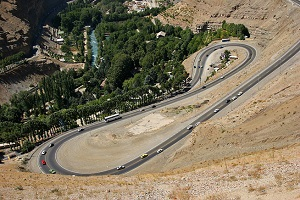
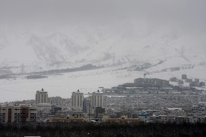
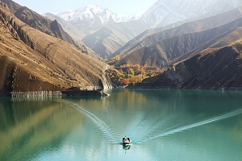
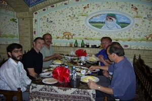
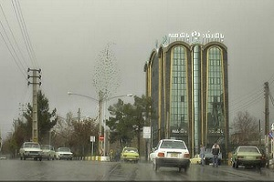

کرج یکی از کلانشهرهای ایران و همچنین مرکز استان البرز و شهرستان کرج است. کرج یکی از شهرهای مرکزی و کوهپایهای ایران میباشد و در دامنهٔ رشته کوههای البرز و در بلندای ۱۳۰۰ متری از سطح دریا واقع شدهاست.
جمعیّت این شهر در سال ۱۳۸۵ برابر با ۱،۳۸۶،۰۳۰ نفر و در سال ۱۳۸۹ خورشیدی برابر با ۱،۶۰۵،۰۰۰ نفر بودهاست و طبق آمار رسمی در سال ۱۳۹۰، ۱،۶۱۴،۶۲۶ نفر میباشد که از این جهت در حال حاضر پس از شهرهای تهران و مشهد و اصفهان بهعنوان چهارمین شهر پرجمعیت ایران بهشمار میرود. کرج پس از تهران بزرگترین شهر مهاجرپذیر ایران است و همچنین جمعیت این شهر نسبت به سایر شهرهای بزرگ ایران جوانتر است. کرج هماکنون بهعنوان یکی از کلانشهرهای کشور ایران بهشمار میآید. این شهر در میان کلانشهرهای ایران با رشد جمعیت سالانهٔ ۳/۱۴ درصد بالاترین رشد جمعیت را دارد
بررسی آماری جمعیت و مساحت شهرستان کرج
جمعیت و مساحت مناطق شهری کرج
منطقه
مساحت منطقه (هکتار)
مساحت حریم مناطق
جمعیت سال ۸۵
جمعیت سال ۸۹
۱
۸۸۳٫۳۶۸
۷۰۰٫۶۸۸
۱۲۵٬۲۵۳
۱۴۵٬۰۴۱
۲
۱۱۱۹٫۸
۵۳۵٫۶۸۷
۱۰۳٬۹۸۶
۱۲۰٬۴۱۴
۳
۲۴۱۷٫۳۷۳
۱۰۱۳٫۱۱۵
۱۳۸٬۵۳۹
۱۶۰٬۴۲۶
۴
۱۶۵۰٫۱۷۸
۴۲۱٫۸۳۶
۱۰۳٬۷۹۶
۱۲۰٬۱۹۴
۵
۱۱۶۷٫۸۹۶
۰
۱۷۴٬۵۷۲
۲۰۲٬۱۵۲
۶
۱۹۵۹٫۴۱۴
۴۰۱۷٫۹۳۵
۱۸۵٬۵۴۵
۲۱۴٬۸۵۸
۷
۱۵۴۱٫۰۳۴
۸۰۹٫۹۷۱
۱۰۷٬۶۷۷
۱۲۴٬۶۸۸
۸
۹۹۹٫۸۸۸
۲۸۸٫۶۵۷
۱۱۳٬۱۷۷
۱۳۱٬۰۵۷
۹
۶۶۴٫۳۵۴
۱۳۸۱٫۷۳۹
۹۰٬۰۲۱
۱۰۴٬۲۴۳
۱۰
۱۸۷۵٫۳۷۲
۴۳۲٫۱۰۲
۱۲۳٬۳۴۷
۱۴۲٬۸۳۴
۱۱
۱۵۶۴٫۶۴۲
۴۰۵۹٫۰۸۶
۶۱٬۰۱۷
۷۰٬۶۵۷
۱۲
۱۶۹۵٫۶۶
۴۲۳۰٫۴
۵۹٬۱۰۰
۶۸٬۴۳۷
جمع
۱۷۵۳۸٫۹۷۹
۱۷۸۹۱٫۲۱۶
۱٬۳۸۶٬۰۳۰
۱٬۶۰۵٬۰۰۰
گالری عکس
زیبایی های کرج

جاده چالوس 
دور نمایی از کرج 
سد کرج 
رستوران سنتی در کرجیک روز بارانی